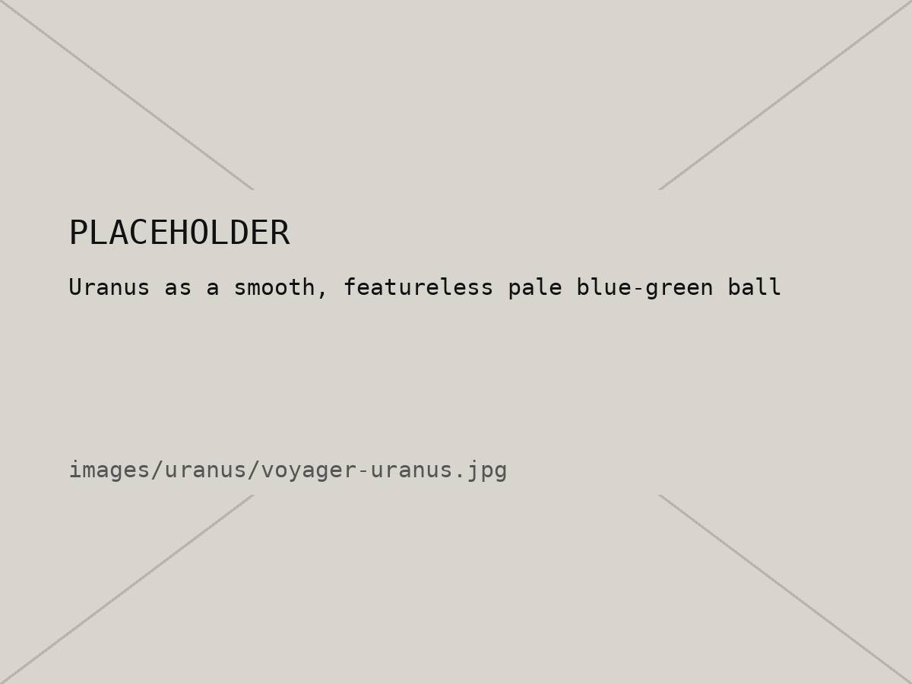
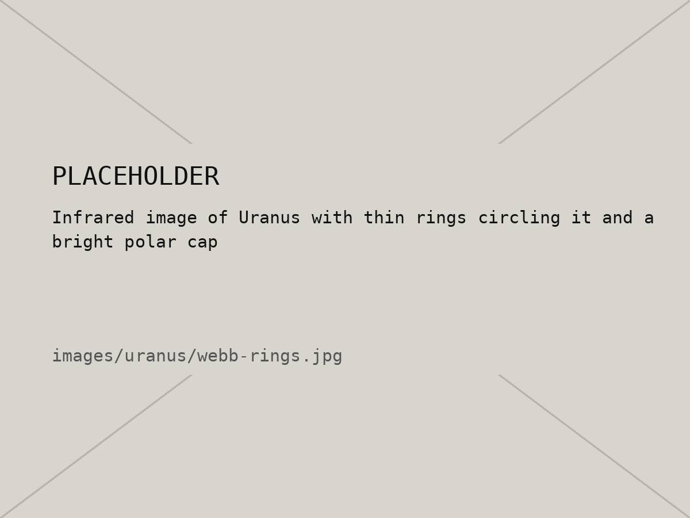

09 / 10 — Planet 7
Uranus
The sideways planet.
01 — Intro
Uranus is an ice giant. Under the blue-green clouds it's mostly water, methane and ammonia, all squashed together. The methane in the air soaks up red light, which is why it looks that pale cyan color.
The weirdest thing about it is that it's tipped over on its side, tilted about 98 degrees. Most likely something huge crashed into it a long time ago. Because of that, each pole gets about 42 years of nonstop sunlight followed by 42 years of darkness.
02 — Quick facts
| Distance from the Sun | About 2.9 billion km (19.2 AU) |
|---|---|
| Diameter | 50,724 km (about 4× Earth) |
| Length of a day | About 17 hours |
| Length of a year | 84 Earth years |
| Axis tilt | About 98° |
| Coldest temperature | −224 °C |
| Moons | 29 known |
03 — Images


04 — Age calculator
One year on Uranus takes 84 Earth years. How old would you be there?